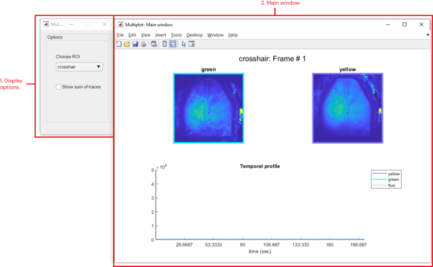

This tool is an Add-on of the DataViewer app. It allows the display of three extra recordings alongside the one currently displayed in DataViewer.
First of all, open an imaging recording in DataViewer app. Then, go to Add-ons >> Multi-plots to launch the app and follow the steps below:
Select up to three files to plot. To select a file, click on the folder icon and choose a .dat file containing the imaging data.
File selection panel of the multi-plot tool.
Once all files are selected, click on Load. Otherwise, click on Reset to start over.
Important
This tool accepts only files with the same dimensions of the one currently displayed in DataViewer!. If a file with different dimensions is loaded, an error message will appear. Click on the "error" icon to load a different file.
Here is the tool interface once the data is loaded:

Interface of multi-plot tool. (1) Display options panel: provides options to display one ROI at a time. (2) Main window: figure showing the current frames (top) and the temporal profiles (bottom) of the selected ROI for each loaded file.
Here, one can visualize the current frame of all loaded files as well as the temporal profile of the selected ROI. Use the dropdown menu in the Display options window to load a different ROI. If no ROI exists, the pixel value of the crosshair from DataViewer is shown. Additionally, you can display the trace containing the sum of the data by checking the Show sum of traces box.
The images and plots are updated every time the current frame is changed or when you change the crosshair position in DataViewer:
Basic data exploration using the multi-plot tool. Notice that the images and time plots are updated after changes in DataViewer.